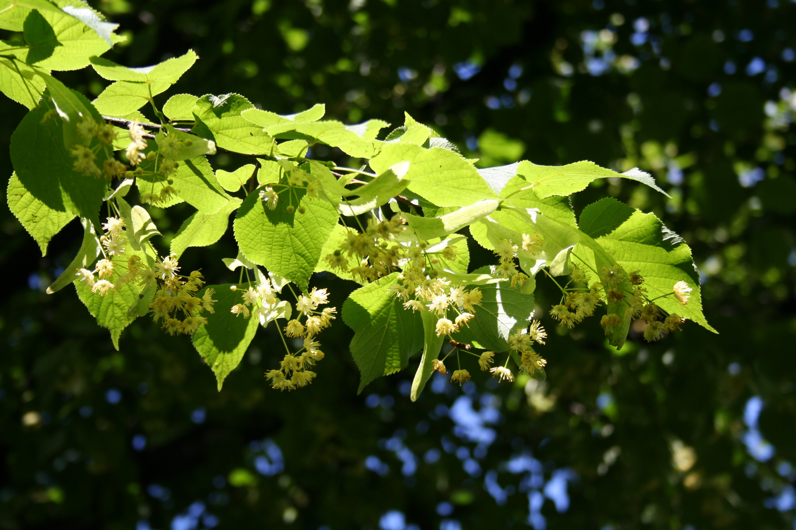

Tilia spp.
| common name | linden | |
| en español | tilos | |
| plant family | Malvaceae (mallow) | |
| parts used | fresh and dried flowers and leaves |
 from Wikimedia Commons by N p holmes - Own work, CC BY-SA 3.0
{kind=link}
observations/description
dried flowers and leaves
- small pieces of hard, light pale green/slightly orangy leaves
- some bits of flower and stem
- sweet aroma, almost cloying, almost caramelized
"Tilia", Wikipedia
- large, deciduous trees, reaching typically 20 to 40 meters tall
- oblique-cordate (heart-shaped) leaves
- hermaphroditic flowers, pollinated by insects
- tiny, pea-like fruit hangs attached to a ribbon-like, greenish-yellow bract whose apparent purpose is to launch the ripened seed clusters just a little beyond the parent tree
- flowers of the European and American Tilia species are similar, except the American ones bear a petal-like scale among their stamens and the European varieties are devoid of these appendages
distribution/conservation status
"Tilia", Wikipedia
- genus occurs in Europe and eastern North America, but the greatest species diversity is found in Asia
primary actions
The New Age Herbalist, p. 116
- diaphoretic, nervine, hypotensive, cardiotonic, diuretic, antispasmodic, vasodilator, sedative
Spiritual Herbalism, p. 25
- nervine, antispasmodic, hypotensive, sedative, anodyne
The Modern Herbal Dispensatory, p. 262
- antispasmodic, hypotensive, nervine, sedative
notes from class, 17 Feb 2025
- nervine, hypotensive, anodyne, diuretic, emollient, expectorant, demulcent, antifungal, antispasmodic, antitussive, astringent, mild diaphoretic, hepatoprotective, anxiolytic
system affinities
nervous, cardiovascular, excretory
energetics
The Modern Herbal Dispensatory, p. 262
- cooling, drying, relaxing
notes from class, 17 Feb 2025
- sweet, cooling
primary uses
The New Age Herbalist, p. 116
- flowers in hot infusion are a sweat-inducing remedy for cold, flu, and catarrh
- relaxes the nervous system, good remedy for overactive children
- helps to alleviate headache and insomnia
- bioflavonoids may account for reputation to lower blood pressure
- remedy for arteriosclerosis
- inner bark of the tree is used for its diuretic effect and to treat kidney stones and gout
- sapwood of the inner bark is antispasmodic and dilates the coronary arteries
- useful to treat coronary artery disease
Spiritual Herbalism, p. 25
- excellent circulatory nervine
- relieves nervous tension and spasms
- useful for treating high blood pressure, body pain from stress, heart palpitations, varicose veins, migraines, colds, fever, and flu
The Modern Herbal Dispensatory, p. 262
- soothing nervine that relaxes tension and reduces blood pressure
- can be helpful for headache
notes from class, 17 Feb 2025
- good for irritability, stress, nervous tension, nervous headaches, palpitations
- with hawthorn for circulatory issues, can be used in high doses
witchcraft
Spiritual Herbalism, p. 25
- historically branches of linden are hung over doorways for protection
- called the tree of immortality and is said to grant its user a long, sweet life
- use after heartbreaks to restore the heart's resilience and open up again to joy
- use the leaves to call in love and magical dreams
notes from class, 3 Aug 2025
- the devil sleeps in the linden tree
The Witch's Encyclopedia of Magical Plants, p. 194-5
- considered sacred by Greeks and Romans
- believed to counteract poison
- soothsayers would stand underneath a linden tree to make prophecies
- regarded as a tree of love
- witches believed to gather under linden trees on Walpurgisnacht
- branches used to keep witches from houses
- bark used as a talisman against magic and witches
- dragons, dwarves, eleves all said to live in lindens
- elements: air
- astrological influence: gemini, sagittarius, taurus, jupiter, mercury, sun
extra information
The New Age Herbalist, p. 116
- used to be categorized in its own family Tiliaceae
pharmacology
The New Age Herbalist, p. 116
- volatile oil (incl. farnesol), flavonoid glycosides (incl. hesperidin and quercitrin), saponins, condensed tannins, mucilage, manganese salts
- bark contains coumarins
contraindications/pharmaceutical interactions/warnings
Spiritual Herbalism, p. 25
- avoid long-term use or if allergic to its pollen
The Modern Herbal Dispensatory, p. 262
- no known warnings
notes from class, 3 Aug 2025
- prolonged use can reduce iron levels
preparations
The Modern Herbal Dispensatory, p. 262
- standard infusion
- dried leaf, 30 g: 1 L
- tincture
- dried leaf, 1:5, 40% alcohol
dosage
The Modern Herbal Dispensatory, p. 262
- standard infusion: 8 oz, 1-4/day
- tincture: 1-5 mL, 2-4/day
personal experiences/simples
macerate (1 tbsp: 16 oz, 12 hours), dried leaves and flowers
- light golden yellow color
- slightly mucilaginous
- sweet, floral flavor; somewhat reminiscent of hawthorn but less meaty/more sweet
- soothing, placating, supportive, calming, slightly dreamy
tisane (2 tsp: 14 oz, 10 minutes), dried leaves and flowers
- very pale golden hue
- shocking acidic taste at first, a bit unpleasant
- reminds me of times i have had hibiscus and the stark acidity reminds me of stomach acid
- the connection to hibiscus is making me feel better about the flavor, however
- perhaps needs a lower herb: water ratio
- back half of palate was floral and more reminiscent of the macerate
- became less acidic-tasting as i went along
- soothing nervine effect
tincture (1:5, 40% alcohol, 2 weeks), dried leaves and flowers
- deep brown/yellow/amber hue
- light, almondy, floral aroma
- light, sweet, almondy, floral taste
- not much alcohol either on the nose or the palate, well supported
- calming, grounding; a retreat
- wants to be tincture/macerated
recipes
sources
Easely, Thomas and Steven Horne. The Modern Herbal Dispensatory (2016)
Goldberg Blackthorn, Samantha and Shona MacDougall. Ace of Cups Herbal Medicine and Botanical Magic Herbal School (2024)
Kynes, Sandra. The Witch's Encyclopedia of Magical Plants (2024)
Mabey, Richard et al. The New Age Herbalist (1988)
Rose, Karen M. The Art & Practice of Spiritual Herbalism (2022)
"Tilia" on Wikipedia. Retrieved 7 May 2025.